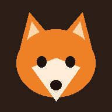

Odin TercümanPomeranian ses çevirmeni · 3 yaşında
KapalıOdin şu an ne diyor
Dinlemeye başla'ya dokun ve telefonu Odin'in yakınına koy. Havladığında ne demek istediğini sesli söyleyeceğim.
Bugün neler dedi
Odin'e söyle
- Anlamı
- Odin'e çalınan
Odin'i mutlu et
Müzik yavaş ve sade bir piyano: dakikada 55 vuruş, 30 dakika sonra kendiliğinden susar. Gürültü dışarıdaki kapı, korna ve havai fişek seslerini bastırır.
Senin sesin
Her sözü kendi sesinle, Odin'e konuşur gibi kaydet: biraz tiz, yavaş ve sevecen. Köpekler sahibinin sesine en çok bu tonda tepki verir. Kayıt yoksa yapay ses aynı tonda konuşur.
Ayarlar
Nasıl çalışıyor?
Ses geldiğinde Google'ın YAMNet modeli sesin türünü ayırır: havlama, tiz havlama, hırlama, inleme, uluma, "he he he" soluması, iç çekme, hapşırma, burun çekme, öksürük, horlama, koklama, homurtu ve çiğneme. Kapı zili ya da kapı vurulmasını da duyar, böylece "kapıda biri var" havlamasını ayırır. Model milyonlarca ses kaydıyla (AudioSet) eğitildi ve telefonun içinde çalışır, ses hiçbir yere gönderilmez.
Anlamı havlama sayısı, hızı, süresi ve perdesine göre çıkarırım. Bu kurallar köpek sesleri üzerine yapılan araştırmalara dayanır: hızlı ve sert seriler alarm, tiz ve aralıklı havlamalar oyun ya da istek, düşük ve uzun sesler tehdit anlamına gelir. Perdeyi Odin'in kendi ortalamasıyla karşılaştırırım, çünkü Pomeranian'lar zaten tiz havlar.
Anlam tahminine ayrıca Barkopedia veri setiyle (12.480 gerçek havlama; köpeğin o an alarm verdiği, ilgi istediği, oynadığı, mama dilendiği, banyoda olduğu ya da dinlendiği kayıtlar) eğittiğim küçük bir model katılır. Bu model tek başına zayıftır (doğrulamada %32 doğruluk, rastgele tahmin yaklaşık %17), o yüzden kurallarla birlikte kullanılır ve yalnızca emin olduğunda karar verir. "Odin'e söyle" bölümündeki köpek sesleri de bu veri setinden seçilmiş gerçek kayıtlardır; uygulama Odin'in kendi seslerini kaydettikçe onları kullanır.
Bunlar tahmindir. Doğru ya da Yanlış'a dokundukça uygulama Odin'i tanır ve kendi örneklerine göre karar vermeye başlar. Ekran açık kalmalı; telefon kilitlenince tarayıcı mikrofonu kapatır.